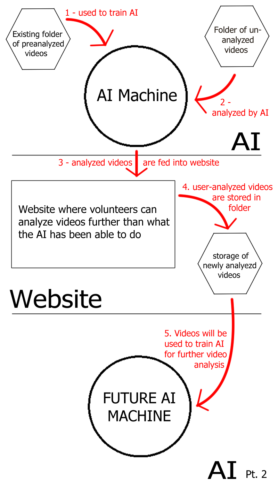

Caribou are the farthest ranging terrestrial mammals in the world,
traveling up to 3,000 miles in a single year. They number 5 million worldwide
Yet, despite all of this, we still know very little about them.
Biologists at the Bureau of Land Management and Environment Yukon have
deployed video camera collars on caribou herds in remote areas of Alaska and
Canada. These collars take precisely geolocated, 9 second long video clips
every 20 minutes. This allows researchers to take a look inside the lives of
Arctic caribou herds.
Currently, scientists have amassed over 90,000 videos, totalling over 3 terabytes
of data. This data is then analyzed by volunteers for important aspects of a
caribous day to day life. It has been estimated that the amount of time it would
take for volunteers to analyze these videos would be a minimum of 1 year, 41 days,
and 21 hours to analyze these.
We see that part of the problem is that human analysis of data takes way too much time.
Thus, part one of our solution is to create an nueral-network, AI machine that can analyze these videos
and cut down the amount of time it.
Our AI will analyze these videos and determine specific features about them. We have devised
a three-step plan of what we want this AI to accomplish, which is as follows:
As can be seen, Step 1 (the minimum amount we hope to accomplish) is for the AI to be able to
determine the quality of the video. Qualities vary between Good, Fair, Poor, and Extremely Obstructed.
Step 2 is for the AI to be able to determine if a caribou is feeding, bedded down, or running. To
further this, if time permits, we would like to design the AI to be able to pick up how and when
caribou are trying to scare away bugs (Step 2.5). Step 3 (the maximum amount we hope to accomplish)
is for the AI to be able to determine what type of plants the caribou are eating.
Since the big problem is that human analysis of data takes way too much time to analyze. Since it is unlikely our team will be able to create an AI that will be able to extract every type of data that our clients want from these videos, our second solution is to create an easy-to-use website that will allow the volunteers to analyse these videos in an easier, and more efficient manner.
The way the two parts of our project can be seen as follows:  The initial concept for this project was provided by our sponsor, in the form of this Capstone Project Proposal